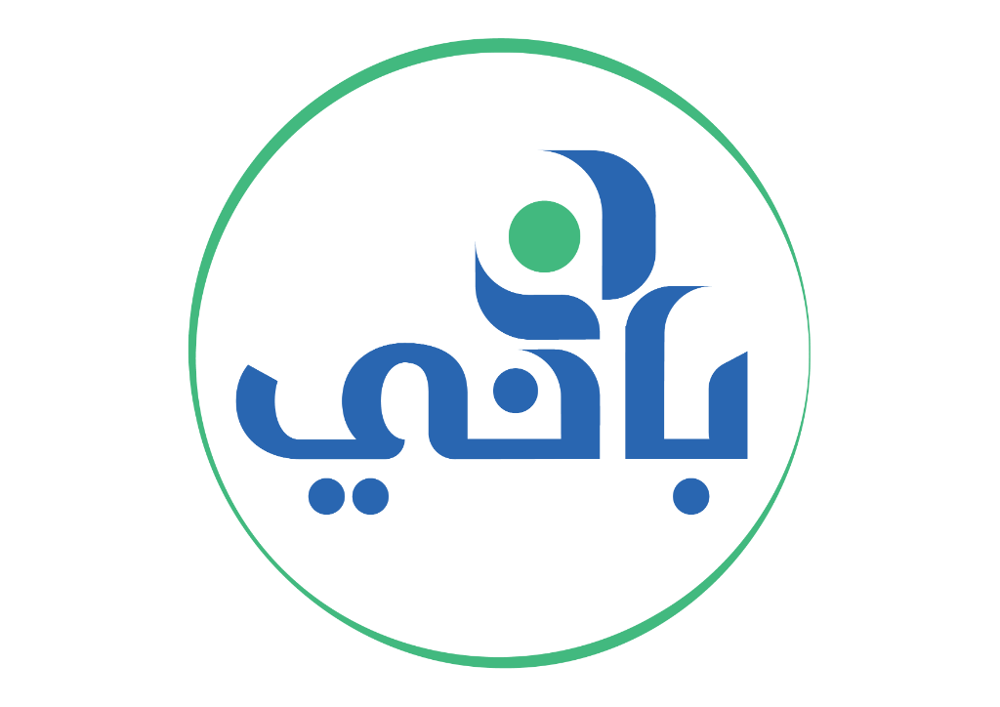

التعلم النظري بدون تطبيق
معرفة متراكمة دون تجربة حقيقية في اتخاذ القرار.

نحن لا نقدم برامج تدريبية…
نحن نبني عقلية قادرة على الدخول للسوق
بثقة وتحقيق نتائج فعلية.
لأن البدايات الخاطئة غالبًا تبدأ من افتراضات غير مختبرة.
المشروع يبدأ بحماس، لكن بدون تحقق حقيقي من السوق.
قرارات تشغيلية ومالية تُتخذ بدون فهم كافٍ.
الاعتماد على السعر فقط بدل تقييم الجودة والالتزام.
تكلفة البداية لا تُحسب بوضوح، فتزيد المخاطر مبكرًا.
النتيجة؟ مشاريع تتوقف قبل ما تبدأ فعليًا
كثيرون يتعلمون ريادة الأعمال نظريًا، لكن القليل يملكون تجربة حقيقية داخل السوق.
الفجوة ليست في توفر المعلومات، بل في القدرة على تحويل المعلومات إلى قرار وتنفيذ.
معرفة متراكمة دون تجربة حقيقية في اتخاذ القرار.
توقعات عاطفية مبنية على مصادر غير موثوقة.
غياب الخبرة المباشرة مع سلاسل الإمداد العالمية والموردين.
الفكرة قد تكون ممتازة، لكن نجاحها الفعلي مرهون بالتنفيذ المرن والتجربة الميدانية.
ليست مجرد معسكرات تدريبية، بل نموذج كامل لإعادة تأهيل الأشخاص لدخول السوق والتمكن منه.
هدفها بناء عقلية تجارية واعية، قادرة على التحليل، الاختيار، التفاوض، والتنفيذ.
باني تبني تجربة تطبيقية تساعد رائد الأعمال على رؤية السوق كما هو، لا كما يتخيله.
المعسكرات ليست برامج تعليمية فقط، بل تجربة ميدانية كاملة تعيد تشكيل طريقة التفكير التجاري.
الهدف: رائد أعمال يرى السوق بوضوح، ويفكر بمنهجية، ويتخذ قراراته بثقة.
نقدم مسارات متعددة حسب مرحلة التاجر:
لتحويل الفكرة إلى مشروع وبدء البيع
مثل مبادرة انطلاقه
لتطوير قطاع أو منتج محدد
مثل معسكر تطوير صناعة وتسويق التمور
لتحسين الأداء، تقليل التكاليف، وزيادة الربحية
لإعداد الجيل القادم لقيادة الأعمال
مثل معسكر قيادات الصف الثاني
دعم معسكرات باني لا يعني دعم تجربة تعليمية فقط، بل دعم مسار يساعد على بناء مشاريع أكثر وعيًا، قرارات أكثر نضجًا، وفرص تجارية قابلة للنمو.
تزويد المشاركين بمنهجيات تحليل عملية مبنية على واقع السوق الفعلي لدعم قرارات استثمارية مدروسة.
حماية رأس المال من التجريب غير المدروس عبر الفحص الميداني، فحص الجودة، والمقارنة المباشرة.
تأسيس ركائز تجارية متينة وإدارة تشغيلية واعية تضمن بقاء المشروع ونموه في منافسة السوق.
ربط مباشر بسلاسل التوريد والأسواق الدولية وتسهيل عمليات التوريد والاستيراد من المصادر الموثوقة.
تحويل النظريات الأكاديمية وخطط العمل الورقية إلى تجارب وممارسات واقعية ميدانية فورية.
دمج رواد الأعمال في شبكة توريد محلية ودولية تعزز تحالفاتهم وتفتح آفاقًا جديدة للشراكة والاستثمار.
نحن لا نقدم نماذج ثابتة فقط ..
بل نقدم خدمة تصميم معسكرات وفق:
(مبتدئ / صاحب مشروع / مستثمر)
(تجارة – صناعة – خدمات)
(محلي – دولي – أسواق محددة)
كل معسكر يتم تصميمه ليحقق أعلى أثر ممكن للفئة المستهدفة
المعسكرات لا تُنفذ بطريقة واحدة، بل بعدة نماذج حسب طبيعة البرنامج والمشاركين.
تجارب ميدانية في أسواق عالمية لفهم الموردين، المنتجات، والفرص على أرض الواقع.
برامج حضورية محلية تُصمم حسب القطاع والهدف التدريبي.
دمج بين التأهيل الداخلي والتطبيق الخارجي لربط المعرفة بالتجربة.
تأهيل معرفي عن بُعد يتبعه تطبيق عملي في السوق.
ورش ومتابعات مستمرة لتحويل المعرفة إلى خطوات تنفيذية.
الهدف: تصميم التجربة بما يخدم طبيعة المشاركين ونتيجة البرنامج.
كل معسكر مبني على 4 مراحل متكاملة:
بناء الفهم الصحيح وتصحيح المفاهيم الأساسية قبل الانطلاق الميداني.
الممارسة العملية المباشرة والتجربة داخل السوق في ظروف حقيقية ومعقدة.
بناء علاقات تجارية حقيقية مع الموردين، المستثمرين، والشركاء الاستراتيجيين.
ضمان استدامة الأثر والتنفيذ الفعلي للمشروع في السوق بعد انتهاء المعسكر.
توضيح الفرق الجوهري بين التعلم النظري والتجربة الحقيقية داخل السوق.
لأن رائد الأعمال لا يحتاج إلى معرفة فقط، بل يحتاج إلى تجربة تجعله يرى، يقارن، يسأل، يفاوض، ويقرر.
لا ينتهي أثر المعسكر بانتهاء التجربة، بل يظهر في وضوح القرار، تقليل المخاطر، وبناء قدرة حقيقية على التحرك داخل السوق.
تحديد الملامح الأساسية للنشاط التجاري وتفادي التشتت قبل البدء.
تجنب المصاريف غير الضرورية والشراء الذكي من المصادر المباشرة.
بناء قنوات توريد آمنة والتعامل مباشرة مع مصادر معتمدة.
اتخاذ الخطوات والقرارات بناءً على بيانات وحقائق وتجربة ميدانية.
معرفة متطلبات العملاء الحقيقية وتحديد حجم الطلب الفعلي بدقة.
التواصل الفعال والمباشر مع خبراء وتجار وشركاء في نفس قطاعك.
امتلاك خطة عمل تنفيذية واضحة ومسار محدد جاهز للتطبيق الفوري.
منظومة معسكرات باني ليست فعالية عابرة، بل نموذج قابل للتكرار، التطوير، والتخصيص حسب احتياج السوق والجهات المشاركة.
منظومة معسكرات باني ليست فعالية عابرة، بل نموذج قابل للتكرار، التطوير، والتخصيص حسب احتياج السوق والجهات المشاركة.

معسكرات باني صُممت لتصنع فرقًا حقيقيًا في طريقة التفكير، اتخاذ القرار، وفهم السوق.
من الفكرة إلى التجربة، ومن التجربة إلى القرار، ومن القرار إلى مشروع أكثر وضوحًا واستعدادًا للنمو.